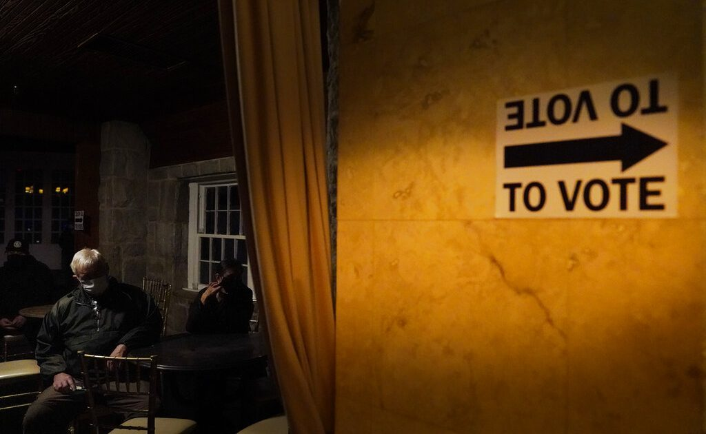

Ga.Gov.Kemp slams calls for boycotts over voting law
OAN Newsroom
Protestors in Georgia are sounding off on new laws, which tighten voting rules and regulations in the Peach State.The legislation has now led to calls for boycotts of several businesses based in Georgia and the governor is speaking out.
While taking to Twitter Tuesday, Gov.Brian Kemp said its absolutely ridiculous to take that approach against businesses in the middle of a pandemic.His comments came just days after Georgia-based companies, including Delta Airlines and Coca Cola faced boycott calls for refusing to condemn the state’s new voting laws.
The laws expanded restrictions on ballot drop boxes and added photo ID requirements for absentee voting.While Democrats have said this amounts to voter suppression, Republicans pushed for the changes over concerns of voter fraud and election security breaches.
Kemp defended the move and even called it very simple.He said the law makes it easy to vote and hard to cheat.Republican state lawmakers are standing their ground on what the bill contains and have continued to provide clarification on the language of the bill despite the false narrative state Sen.Butch Miller (R) said surrounds the law.
The Georgia governor echoed these sentiments while pointing out activists from out of state are benefiting from pushing this narrative while hard-working Georgians are being punished.
This comes as activists are now calling for the PGA to move its upcoming Masters tournament at Augusta National and the MLB to relocate its All-Star Game slated for July in Atlanta.Both major annual events are known to employ local residents and, if moved, would only hurt Georgians directly.
— Governor Brian P. Kemp (@GovKemp) March 26, 2021
Meanwhile, state lawmakers in a number of other states like Florida and Arizona are following suit with their own efforts aimed at curbing voter fraud in future elections.
Posted On: 2021-03-31T00:00:00

Content Date: 2021-03-31
Download Date: 2021-04-16
Document ID: L0C049ZRP